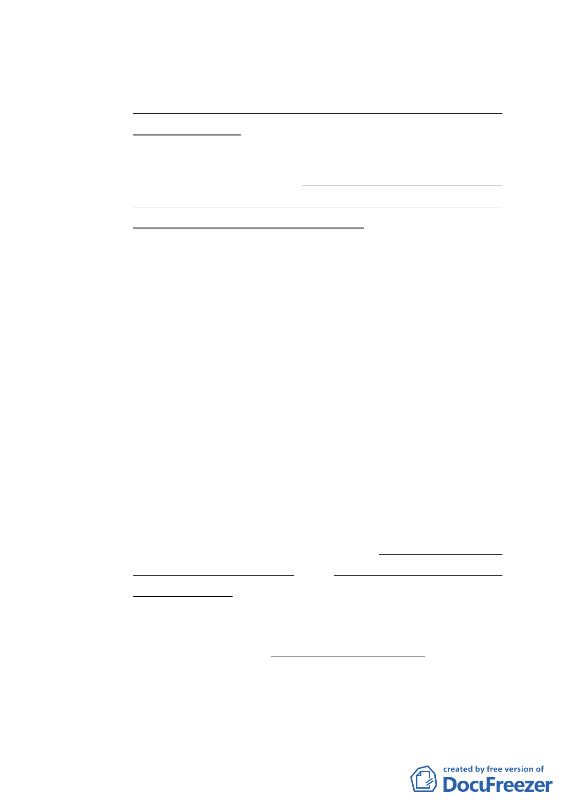

（1）本地區街廓編號B10娛樂區（供娛樂健身使用）（中山區
金泰段32-2等8筆地號），供遊憩、娛樂、健身使用為主，
建築物低層部(地面層第一至第三層)應作計畫書附表1
指定之使用項目，其餘樓層得比照臺北市土地使用分區
管制規則第三種商業區之規定辦理。
（2）惟依本計畫開發許可條件申請放寬作住宅使用之容積樓
地板面積不得超過申請基地容積樓地板面積（不含臺北
好好看獎勵容積）之二分之一以上。建築物非供住宅使
用之樓層，其同層及以下各樓層應均非供住宅使用。
（3）為配合科技產業軸帶之發展，申請台北好好看所增加之
各項獎勵容積樓地板面積應第三種商業區允許使用項目
（不准許做住宅使用），且不得計入前項土地及建築物
之使用規定有關商業使用容積樓地板面積之計算。
2、土地使用強度：
（1）本計畫區其建蔽率不得低於40%。
（2）地下層開挖規模：本計畫區內建築基地之地下層開挖規
模原則以各使用分區及各公共設施用地之法定建蔽率加
10%為上限。採用綜合設計放寬規定者，地下層最大開挖
規模，應再減10%為原則。
3、容積放寬規定：
（1）依本計畫及其他規定得增加容積者，其增加容積之總和
不得超過基準容積之50%，其中適用容積移轉者不得超過
基準容積之20%。
4、建築物高度：
（1）本計畫區建築物高度以不超過90公尺為原則。經『臺北
市都市設計及土地使用開發許可審議委員會』審議通
過，對都市環境具有友善或生態貢獻，並符合臺北好好
看計畫目標者，得放寬建築物高度不得超過100公尺，經
審議未符合規定者，建築物高度不得超過80公尺。
- 18 -